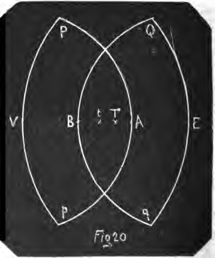

Libro III § 68: Trisezione d’una Distanza¶
Lorenzo Mascheroni (La Geometria del Compasso, Pavia 1797, § 68, pp. 36–37)
Problema. Dividere in tre parti eguali la distanza \(AB\).
Soluzione. Col raggio \(AB\) e centro \(B\) (fig. 20) si descriva il cerchio \(BCDE\); e si faccia ad \(AB = BC = CD = DE\) (§ 10). Quindi col centro \(E\), raggio \(EC\) si descriva l’arco indefinito \(QCPq\). Col centro \(A\), raggio \(AB\) si taglierà questo arco in \(P\) e \(p\). Coi centri \(P\) e \(p\), e collo stesso raggio \(AB\) si descrivano due archi, che si taglino in \(M\). Sarà la \(BM\) la terza parte della \(AB\). Se poi col centro \(M\), e collo stesso raggio \(MB\) si descriva un arco, che tagli la \(AB\) in \(N\) verso \(A\); sarà la \(AB\) divisa in tre parti eguali nei punti \(M\) ed \(N\).


Dimostrazione. Il punto \(M\) sarà sulla retta \(BE\) (§ 13). Essendo poi \(BC = CD = AB\), sarà \(BD = \sqrt{3} AB\) (§ 2); ed essendo \(BE = 2 AB\) (§ 64), nel triangolo rettangolo \(\triangle BCE\) (31, lib. III), si avrà \((EC)^2 = (BE)^2 - (BC)^2 = 4(AB)^2 - (AB)^2 = 3(AB)^2\).
Dunque \(EP = EC = \sqrt{3} AB\).
Ora i due triangoli isosceli \(\triangle PBE\) e \(\triangle PBM\) sono simili per avere comune l’angolo alla base in \(B\) (5 e 32, lib. I; 4, lib. VI).
Dunque \(BE : BP :: BP : BM\).
Quindi \(BE \cdot BM = (BP)^2\). Ma \(BP = AB\), e \(BE = 3 AB\) (avendo prolungato \(E\) a tre volte \(AB\)).
Ossia \(3 AB \cdot BM = (AB)^2\). Dividendo per \(AB\), risulta \(3 BM = AB\), ossia \(BM = \frac{1}{3} AB\). Dunque \(BM\) è la terza parte di \(AB\), ed \(N\) ne determina la seconda divisione.